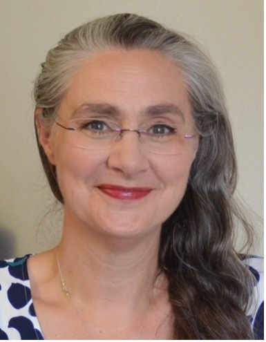

Meet the Team!
Lab Members
Dr Ashley Symons
Principal Investigator
In my work, I explore how different people perceive interpret the sounds in their environment, whether those sounds consist of speech, music, or other environmental sounds. I am particularly in the strategies people use to cope with successfully perceive sounds in challenging listening environments, and whether the strategies we use change over the course of the lifespan. I am currently building my lab at Royal Holloway. If you are interested in this work and would like to discuss PhD or postdoctoral fellowships, please get in touch!

Emma Curtis
Research Assistant
With a primary career as an international solo opera singer, I am also a psychological therapist and voice pedagogue specialising in performance anxiety and self-esteem. In 2022, I graduated with Psychology MSc with my dissertation on perception, surprise and sustained attention. Having assisted in Clare Press’ Action and Perception Lab with EEG study of visual perception, I’m enriching my understanding of perception and learning with study of auditory processing in the ASH Lab. I’m planning to pull my experience together to investigate the effects of expectation and perception on vocal performance.
Gabi Booth
Undergraduate Research Assistant
Collaborators
- Dr Anna-Katharina Matke-Bauer, Royal Holloway, University of London
- Dr Kyle Jasmin, Royal Holloway, University of London
- Prof Adam Tierney, Birkbeck College, University of London